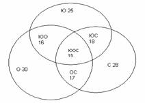

1.1. Понятие множества. Операции над множествами
Понятие множества является одним из основных первичных понятий математики. Множество – понятие неопределяемое.
Множество можно представить как совокупность некоторых объектов, объединенных по какому-либо признаку.
Множество состоит из элементов. В зависимости от их числа множества различают как конечные или бесконечные. Конечные множества могут состоять из одного или нескольких элементов.
Множество, не содержащее элементов, называется пустым множеством и обозначается Æ.
Множество обозначают заглавными буквами, а его элементы – прописными. Для записи множества используют фигурные скобки. Например, множество натуральных чисел: N = {1, 2, …}.
Говоря об определенном множестве, мы полагаем, что для каждого объекта имеется две возможности: либо он входит в рассматриваемое множество, т.е. является его элементом, принадлежит ему (); либо нет ().
Способы задания множества:
- перечисление всех элементов множества, например, множество однозначных неотрицательных чисел X = {0, 1, 2, …, 9};
- указание общего свойства, которым обладают все элементы множества, например, множество четных натуральных чисел X = {2, 4, 6, 8, 10, 12, …} или X = { x : x = 2n }.
В математике приняты стандартные обозначения для некоторых числовых множеств: N – множество натуральных чисел, Z – множество целых чисел, Q – множество рациональных чисел, R – множество действительных чисел.
Множество А называют подмножеством множества В (), если каждый элемент множества А является также элементом множества В.
Множества А и В называют равными (), если каждый элемент множества А является одновременно элементом множества В и наоборот, т.е. если и . Другими словами, два множества равны, если они состоят из одних и тех же элементов.
Множество I называется универсальным множеством (множество всех подмножеств) для некоторой системы множеств, если каждое множество этой системы является подмножеством I , т.е. {A, B, C, …} : , , , …
Дополнением множества А () называется множество, состоящее из тех и только тех элементов универсального множества, которые не входят в множество А.
Суммой (объединением) двух множеств А и В ( или ) называется множество С, состоящее из тех элементов, которые принадлежат или множеству А, или В, или А и В одновременно.
Произведением (пересечением) двух множеств А и В ( или  ) называется множество С, состоящее из тех и только тех элементов, которые принадлежат множествам А и В одновременно.
) называется множество С, состоящее из тех и только тех элементов, которые принадлежат множествам А и В одновременно.
Разностью двух множеств А и В ( или  ) называется множество тех элементов множества А , которые не принадлежат множеству В: .
) называется множество тех элементов множества А , которые не принадлежат множеству В: .
Прямым произведением двух множеств А и В () называется множество, состоящее из упорядоченных пар элементов, в которых первый элемент принадлежит множеству А, а второй – множеству В.
Свойства операций над множествами:
- ;
- ;
- ;
- ;
- ;
- ;
- ;
- ;
- ,
 .
.
Взаимно однозначным соответствием между множествами А и В называется такое соответствие, при котором каждому элементу соответствует единственный элемент и наоборот.
Множества А и В называются эквивалентнымиили равномощными (А ~ В), если между ними можно установить взаимно однозначное соответствие.
Множество А является бесконечным, если оно эквивалентно некоторому своему собственному подмножеству; в противном случае множество А – конечное. Количество элементов конечного множества называется мощностью и обозначается .
Всякое бесконечное множество, эквивалентное множеству действительных чисел, называется множеством мощности континуума.
Всякое бесконечное множество, эквивалентное множеству натуральных чисел, называется счетным.
Для определения мощности объединения (суммы) множеств можно использовать правило суммы:
● если и ,, то .
● если и ,, , то
● в случае трех множеств
и т.д.
ПРИМЕРЫ
Пример 1.1. Заданы два множества: А = {-3, -2, -1, 0, 1, 2, 3} и B = {-1, 0, 2, 4, 5, 6, 7}. Определить множества  ;
;  ;
;  ;
;  и их мощность.
и их мощность.
Решение:
Множество А = {-3, -2, -1, 0, 1, 2, 3} состоит из семи элементов, следовательно мощность этого множества равна 7: . Аналогично,B = {-1, 0, 2, 4, 5, 6, 7}, .
Для наглядности, в перечислении элементов заданных множеств выделим жирным курсивом повторяющиеся (общие) элементы: А = {-3, -2, -1, 0, 1, 2, 3} и B = {-1, 0, 2, 4, 5, 6, 7}.
По определению объединение двух множеств состоит из всех элементов, которые принадлежат и множеству А, и множеству В, следовательно  = {-3, -2, -1, 0, 1, 2, 3, 4, 5, 6, 7} и .
= {-3, -2, -1, 0, 1, 2, 3, 4, 5, 6, 7} и .
По определению пересечение двух множеств состоит только из общих для обоих множеств элементов, следовательно = {-1, 0, 2} и .
Множество является разностью двух множеств А и В и состоит из элементов множества А, которые одновременно не принадлежат множеству В, следовательно {-3, -2, -1, 0, 1, 2, 3} -{-1, 0, 2, 4, 5, 6, 7} = {-3, -2, 1, 3} и .
Аналогично,  {-1, 0, 2, 4, 5, 6, 7} - {-3, -2, -1, 0, 1, 2, 3} = {4, 5, 6, 7} и .
{-1, 0, 2, 4, 5, 6, 7} - {-3, -2, -1, 0, 1, 2, 3} = {4, 5, 6, 7} и .
Пример 1.2. Заданы множества, являющиеся промежуткам числовой оси А = [-2.8; 0)и B = [-2; 0] . Определить ; ;  ;
;  ;
;  .
.
Решение:
По определению, дополнением множества А называется множество, состоящее из тех и только тех элементов универсального множества, которые не входят в множество А или, иными словами, разность универсального множества и собственно множества А. Для числовых промежутков универсальным множеством (множеством всех подмножеств-промежутков) является вся числовая ось .
Следовательно,  = - [-2.8; 0) = .
= - [-2.8; 0) = .
Далее, для наглядности определения множеств  ;
;  ; и
; и  изобразим (схематично) расположение заданных промежутков относительно друг друга:
изобразим (схематично) расположение заданных промежутков относительно друг друга:
По определению объединение двух множеств состоит из всех элементов, которые принадлежат и множеству А, и множеству В, следовательно  = .
= .
По определению пересечение двух множеств состоит только из общих для обоих множеств элементов, следовательно = .
Множество  является разностью двух множеств А и В и состоит из элементов множества А, которые одновременно не принадлежат множеству В, следовательно .
является разностью двух множеств А и В и состоит из элементов множества А, которые одновременно не принадлежат множеству В, следовательно .
Множество  , по определению, состоит из элементов множества В, которые одновременно не принадлежат множеству А, а таким элементом является единственное число 0, и, следовательно разностью промежутков В и А является конечное множество, состоящее из одного единственного элемента:
, по определению, состоит из элементов множества В, которые одновременно не принадлежат множеству А, а таким элементом является единственное число 0, и, следовательно разностью промежутков В и А является конечное множество, состоящее из одного единственного элемента:  .
.
Пример 1.3. Староста одного курса дал следующие сведения о студентах: ”На курсе учатся 45 человек, в том числе 25 юношей. 30 человек учатся на хорошо и отлично, в том числе 16 юношей. Спортом занимаются 28 человек, в том числе 18 юношей и 17 человек, учащихся на хорошо и отлично. 15 юношей учатся на хорошо и отлично и занимаются спортом.” Проверьте непротиворечивость приведенных старостой сведений.
Решение:
Для проверки правильности (непротиворечивости) приведенных данных используем теорию множеств и введем следующие обозначения.
Кроме того, для наглядности, изобразим полученные данные на диаграмме Венна.
Множество юношей обозначим буквой Ю, и по данным старосты количество юношей .
Множество спортсменов обозначим С и .
Множество отличников и хорошистов обозначим О и .
При этом из условия, что 30 человек учатся на отлично и хорошо, в том числе 16 юношей, имеем .
Из условия, что спортом занимаются 28 человек, в том числе 18 юношей и 17 человек, учащихся на отлично и хорошо, следует и .
Из условия, что 15 юношей учатся на отлично и хорошо и занимаются спортом, следует .
По правилу суммы, исходя из полученных от старосты данных, общее количество студентов курса, т.е. , должно быть равно
.
Однако это противоречит исходному условию, что на курсе учатся всего 45 студентов. Вывод: в сведениях, поданных старостой курса, содержится ошибка.
Вопросы и упражнения для самоконтроля
- Укажите смысловые связки естественного языка, соответствующие основным операциям над множествами: дополнение, объединение (сумма), пересечение (произведение), разность.
- Доказать, что .
- Показать, при каком условии множество X удовлетворяет следующим свойствам: а) ; б) .
- Пусть множество сотрудников некоторого предприятия; множество всех сотрудников старше 40 лет; множество сотрудников, имеющих стаж более 10 лет; множество служащих; множество рабочих. Каков содержательный смысл каждого из нижеследующих множеств?
6.1. ; |
6.4. ; |
6.7.; |
6.10. |
6.2. ; |
6.5. ; |
6.8. |
6.11. ; |
6.3.  ; ; |
6.6. ; |
6.9. ; |
6.12. . |
- Во время отпуска 12 дней шел дождь, 8 дней дул сильный ветер, причем 5 дней были дождливы и ветрены. Сколько же всего было дней с плохой погодой?
УПРАЖНЕНИЯ
- Пусть {2, 3}; {3, 4}; {1, 0}. Найти:
а) ; |
в) ; |
д) ; |
ж) ; |
б) ; |
г) ; |
е) ; |
з) . |
- Заданы два множества: А = {1, 5, 7, 9, 12} и B = {5, 7, 9, 11, 13}. Найти множества ;
 ;
;  ; и их мощность.
; и их мощность.
- По заданным промежуткам А и B на числовой оси определить ;
 ;
;  ;
;  ; .
; .
а) и ; б) и ; в) и ; г) и .
- В группе из 30 студентов каждый знает, по крайней мере, один иностранный язык – английский или немецкий. Английский знают 22 студента, немецкий – 17. Сколько студентов знают оба языка? Сколько студентов знают немецкий язык, но не знают английский?
- В отделе научно-исследовательского института работают несколько человек, причем каждый из них знает хотя бы один иностранный язык. 6 человек из них знают английский, 6 – немецкий, 7 – французский, 4 – английский и немецкий, 2 – английский и французский, 3 – немецкий и французский, 1 человек знает все три языка.
а) Сколько человек работает в отделе?
б) Сколько из них знает только английский язык?
в) Сколько человек знает только один язык?
- В группе занимаются 40 человек, из них 20 человек изучают французский, 20 человек – английский язык, 14 человек – немецкий; английский и французский языки – 9 человек; немецкий и английский – 7 человек; немецкий и французский – 5 человек; все три языка – 2 человека. Сколько человек не изучают ни одного языка?
- Каждый из 500 студентов обязан посещать хотя бы один из трех спецкурсов: по математике, физике и астрономии. Три спецкурса посещают 10 студентов, по математике и физике – 30 студентов, по математике и астрономии – 25; спецкурс только по физике – 80 студентов. Известно также, что спецкурс по математике посещают 345 студентов, по физике – 145, по астрономии – 100 студентов. Сколько студентов посещают спецкурс только по астрономии? Сколько студентов посещают два спецкурса?